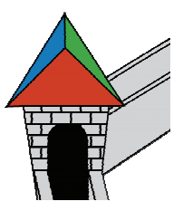

The tower in the castle of King Arthur is crowned with a roof, which is a triangular pyramid, in which all flat angles at the top are straight. Three roof slopes are painted in different colours. The red roof slope is inclined to the horizontal at an angle α, and the blue one at an angle β. Find the probability that a raindrop that fell vertically on the roof in a random place fell on the green area.

It is natural to assume that the drop falls on the roof accidentally in the sense that the probability of its falling onto some area of the roof is proportional to the area of the projection of this region on the horizontal surface. Then we should be interested in the area of the projections of the rays to the triangular base of the roof.
We denote the area of the green slope $S_g$. Then the area $S_{ORB}$ of the projection of this slope on the plane of the triangle RBG lying on the base of the roof is $S_g$ cos γ, where γ is the unknown inclination angle of the blue slope.
Let S = $S_{RGB}$. It follows from the condition that each edge of the pyramid is perpendicular to the lateral face, in which it does not lie. Therefore, $S_g$ = S cos γ. Therefore, $S_{ORB} = S cos^2γ$.
The required probability is 
It remains to find $cos^2γ$. Performing similar calculations, we find: $S_{OBG} = S cos^2α, S_{ORG} = S cos^2β$. Hence, $S = S (cos^2α + cos^2β + cos^2γ)$, from which $cos^2α + cos^2β + cos^2γ = 1$. Therefore, $cos^2γ = 1 – cos^2β – cos^2α$.
$1 – sin^2β – cos^2α$.